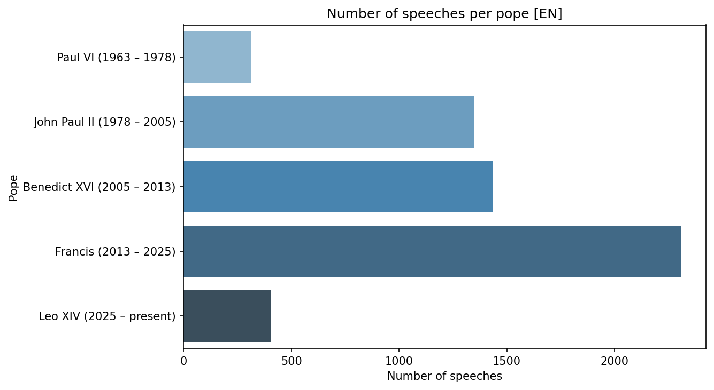
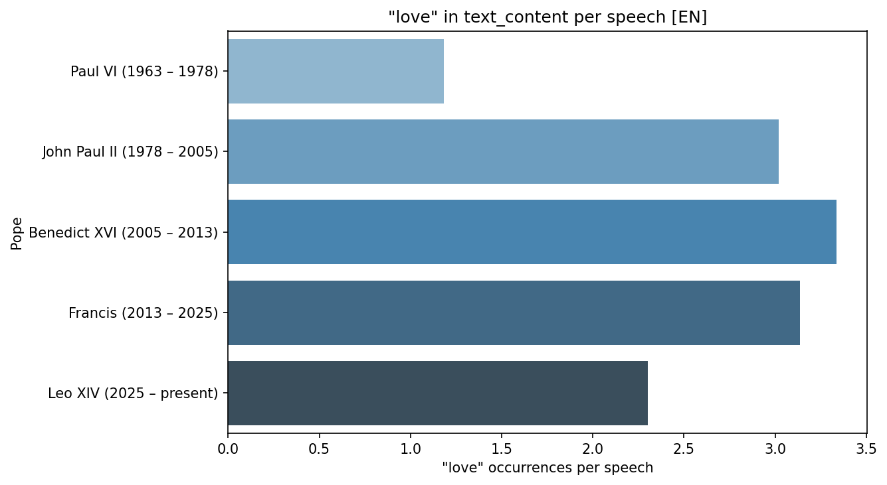
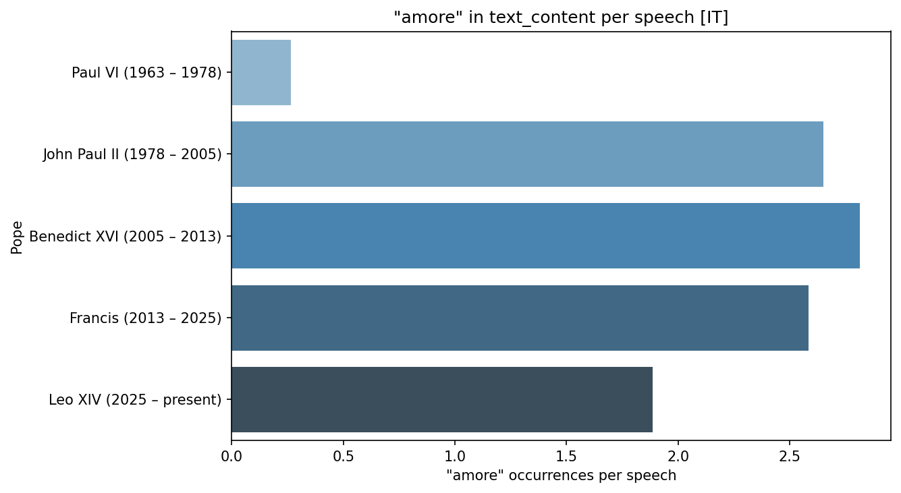
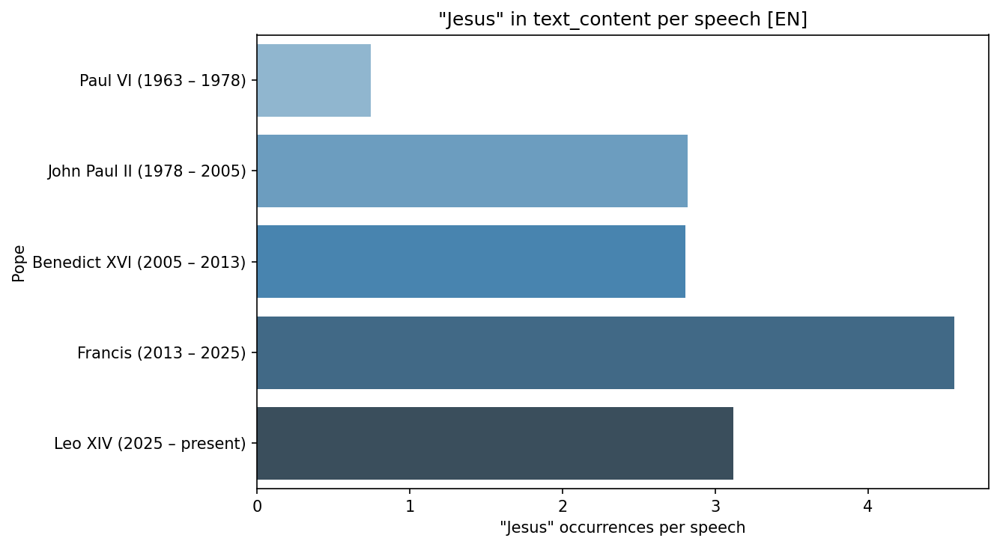
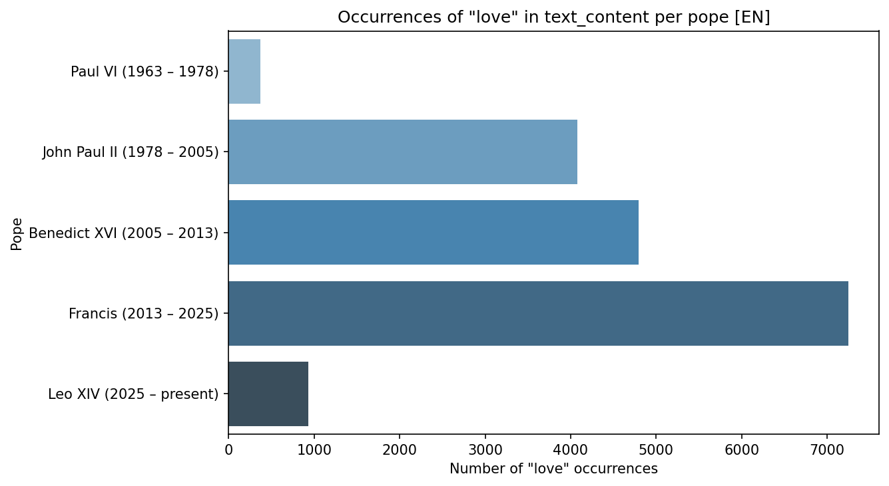
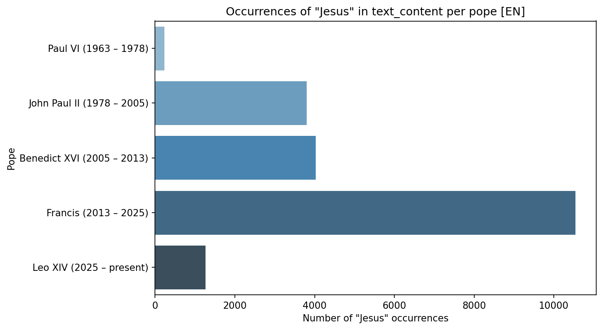
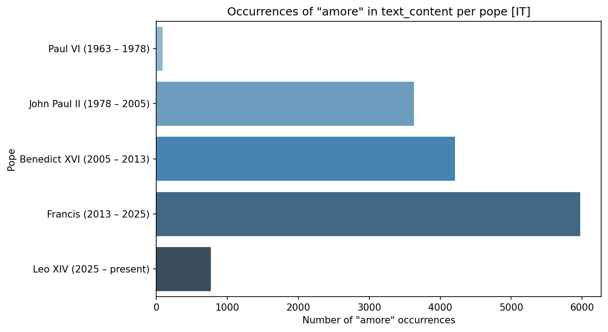
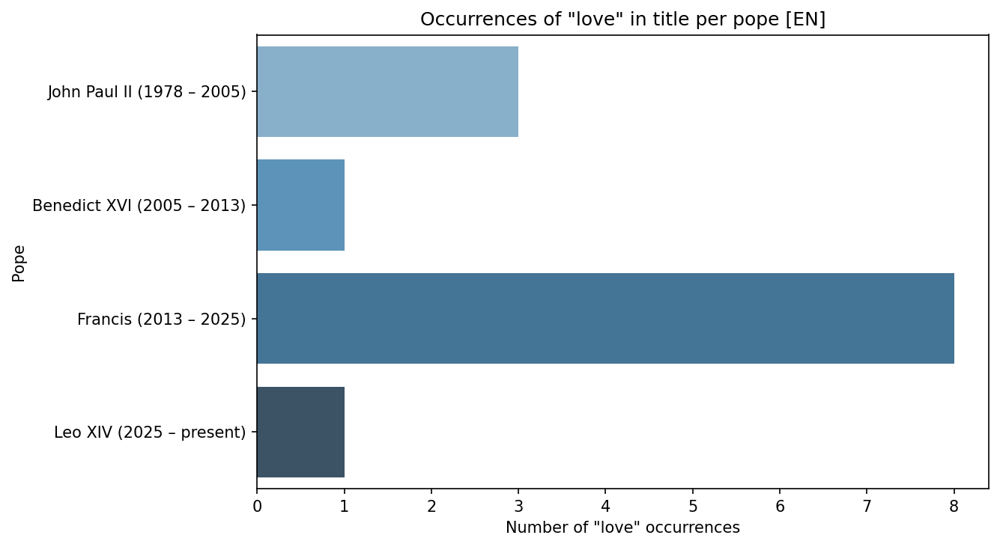
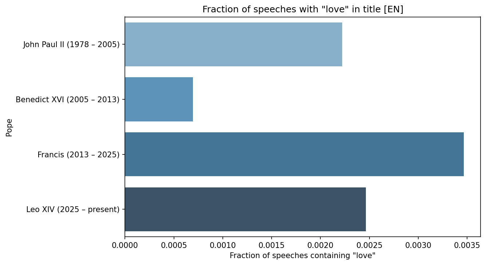
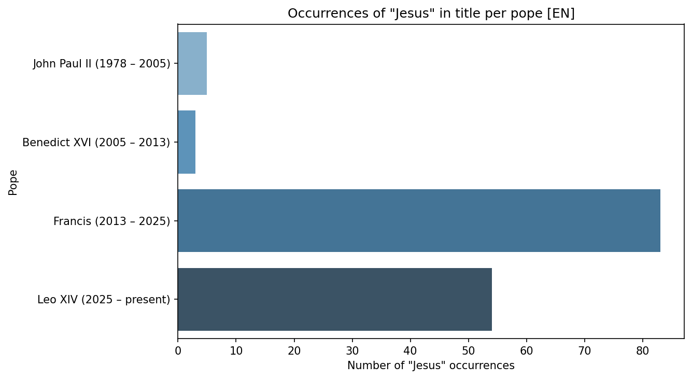

Word frequency across five pontificates
How often do popes reach for a given word? These figures compare "love" and "Jesus" in English and "amore" in Italian across Paul VI, John Paul II, Benedict XVI, Francis and Leo XIV.
These figures come from a wider corpus than the one in data.md
They cover five pontificates back to 1963. The reference build
documented in The Data contains only Francis and Leo XIV, so
running create_example_plots against it today reproduces the same charts
with two bars, not five. Scrape the earlier popes to regenerate them in
full:
How much each pope said
Every rate below divides by this. Francis dominates the corpus, and Paul VI is barely present in it.

Paul VI reigned fifteen years but contributes about 310 English documents, against roughly 1,350 for John Paul II's twenty-seven. The Vatican website is not an even historical record — the further back you go, the less of a pontificate was digitised and translated. Read every Paul VI bar below with that in mind.
Rates: the comparable view
Dividing occurrences by number of documents removes the length of a pontificate from the comparison.
"love" in English

"amore" in Italian

These two are the most interesting pair on the page, because they are independent measurements that agree. English and Italian are scraped as separate passes over separate index pages, yet both rank the popes the same way: Paul VI lowest by a wide margin, then Leo XIV, then Francis and John Paul II close together, with Benedict XVI highest.
Two corpora in two languages producing the same ordering is a reasonable sign the signal is real and not an artefact of one translation pipeline.
"Jesus" in English

Here the pattern breaks, and it is the clearest single result on the page. Francis says "Jesus" about 4.6 times per document, against 2.8 for both Benedict XVI and John Paul II — roughly 60% more than either. Benedict, who led on "love", is unremarkable on "Jesus".
This is consistent with the scripture heatmap, where Francis leans noticeably harder on Mark, the most narrative of the Gospels.
Raw counts: dominated by tenure



Francis towers over everyone — 10,500 occurrences of "Jesus" against Benedict's 4,000. That is very close to being a restatement of the first chart on this page. A pope with three times the documents will generally have three times the word occurrences, so these totals mostly measure how long someone reigned and how much of it was published. They are here for completeness; the rate charts are the ones that carry an argument.
Titles: too few to interpret



Do not read these as findings
The underlying counts are 1, 3 and 8 documents. The fraction chart's axis runs to 0.0035 — roughly three speeches in a thousand. At that scale a single differently-worded title moves a bar by a third, and Paul VI drops off the chart entirely because his count is zero.
Titles on vatican.va are editorial descriptions ("To the Members of the Diplomatic Corps"), not the pope's own words, so they were never a promising place to look for rhetoric. Kept here as an honest negative result.
Regenerating
Figures are written to outputs/example_plots/ (gitignored). The functions
behind them — plot_speech_count_per_pope, plot_word_count_per_pope and
plot_word_rate_per_pope — take any search word, language and field, so the
same three charts can be produced for any term in the corpus.